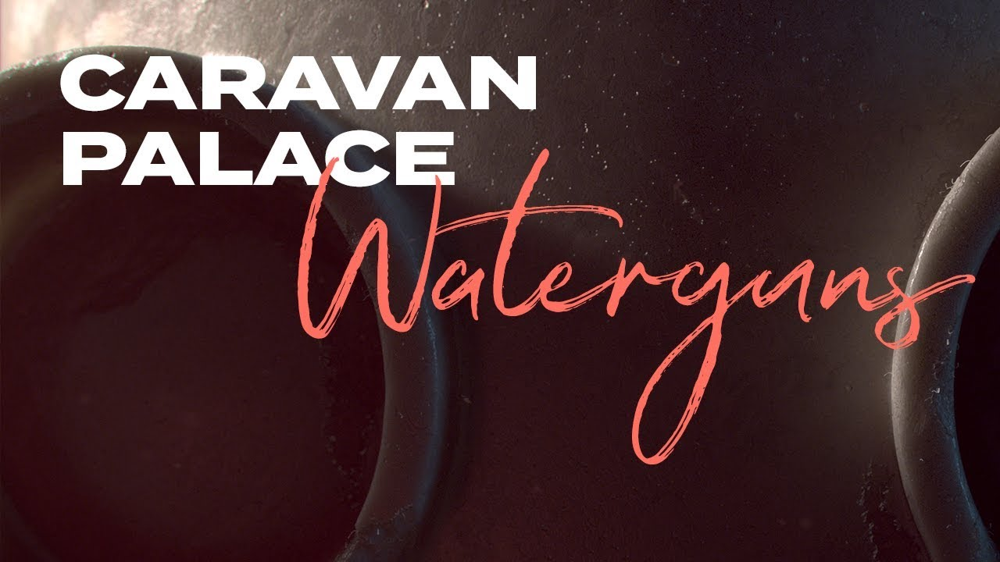

Spotify

YouTube
På krigsstigen vår vilding är Lobbar på raken sfär efter sfär Bakom husknuten ligger i försåt Akta, eller så blir du plaskvåt Ge tillbaka med samma mått Ingen vapenvila, nu ska det bli vått!